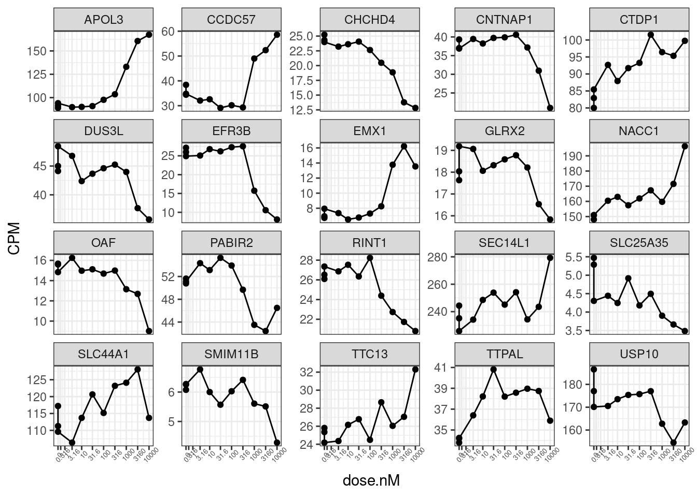
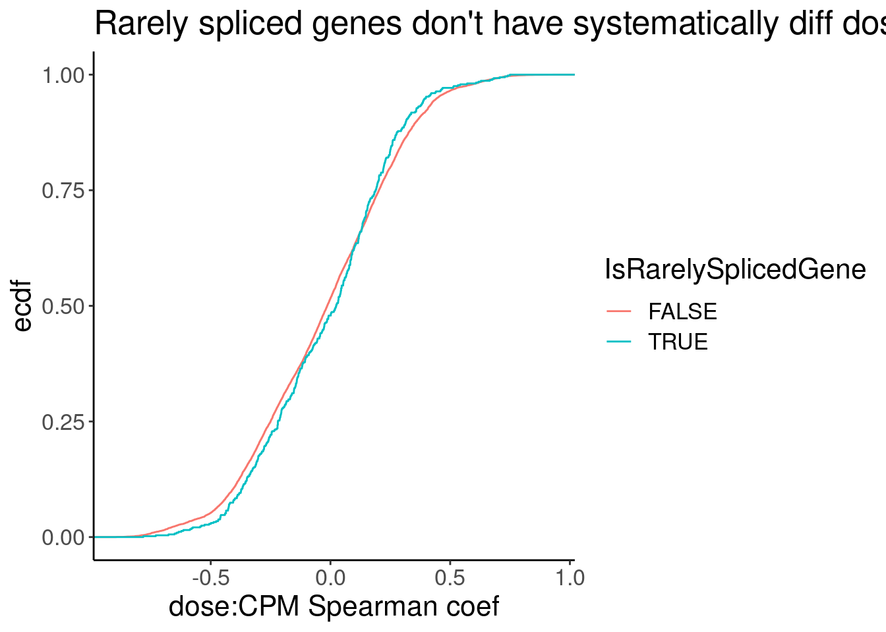
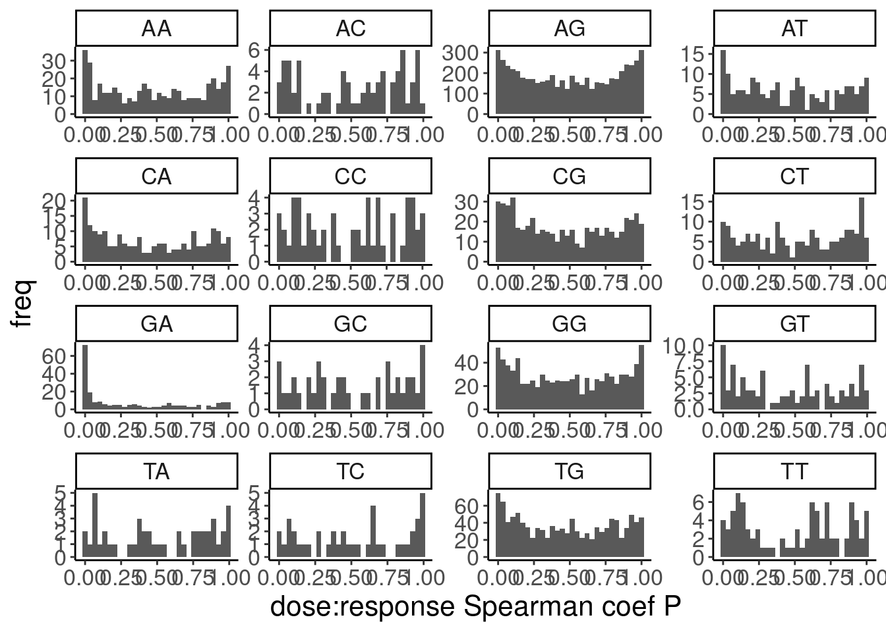
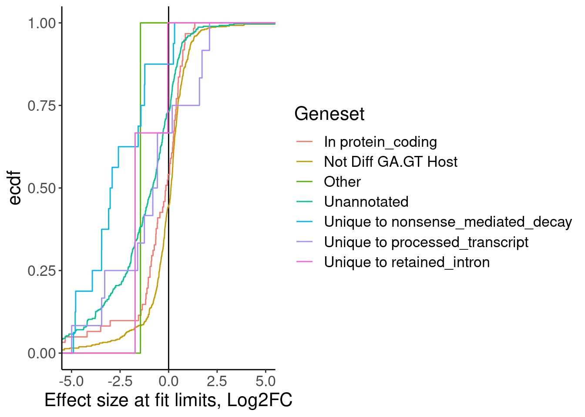
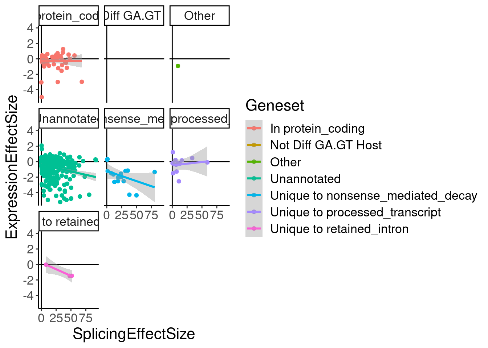

SmallMoleculeProcessing
Last updated: 2023-01-10
Checks: 6 1
Knit directory: ChromatinSplicingQTLs/analysis/
This reproducible R Markdown analysis was created with workflowr (version 1.6.2). The Checks tab describes the reproducibility checks that were applied when the results were created. The Past versions tab lists the development history.
The R Markdown file has unstaged changes. To know which version of the R Markdown file created these results, you’ll want to first commit it to the Git repo. If you’re still working on the analysis, you can ignore this warning. When you’re finished, you can run wflow_publish to commit the R Markdown file and build the HTML.
Great job! The global environment was empty. Objects defined in the global environment can affect the analysis in your R Markdown file in unknown ways. For reproduciblity it’s best to always run the code in an empty environment.
The command set.seed(20191126) was run prior to running the code in the R Markdown file. Setting a seed ensures that any results that rely on randomness, e.g. subsampling or permutations, are reproducible.
Great job! Recording the operating system, R version, and package versions is critical for reproducibility.
Nice! There were no cached chunks for this analysis, so you can be confident that you successfully produced the results during this run.
Great job! Using relative paths to the files within your workflowr project makes it easier to run your code on other machines.
Great! You are using Git for version control. Tracking code development and connecting the code version to the results is critical for reproducibility.
The results in this page were generated with repository version 57404e6. See the Past versions tab to see a history of the changes made to the R Markdown and HTML files.
Note that you need to be careful to ensure that all relevant files for the analysis have been committed to Git prior to generating the results (you can use wflow_publish or wflow_git_commit). workflowr only checks the R Markdown file, but you know if there are other scripts or data files that it depends on. Below is the status of the Git repository when the results were generated:
Ignored files:
Ignored: .DS_Store
Ignored: .Rhistory
Ignored: .Rproj.user/
Ignored: analysis/.Rhistory
Ignored: code/.DS_Store
Ignored: code/.RData
Ignored: code/._.DS_Store
Ignored: code/._README.md
Ignored: code/._report.html
Ignored: code/.ipynb_checkpoints/
Ignored: code/.snakemake/
Ignored: code/APA_Processing/
Ignored: code/Alignments/
Ignored: code/ChromHMM/
Ignored: code/ENCODE/
Ignored: code/ExpressionAnalysis/
Ignored: code/FastqFastp/
Ignored: code/FastqFastpSE/
Ignored: code/Genotypes/
Ignored: code/H3K36me3_CutAndTag.pdf
Ignored: code/IntronSlopes/
Ignored: code/Metaplots/
Ignored: code/Misc/
Ignored: code/MiscCountTables/
Ignored: code/Multiqc/
Ignored: code/Multiqc_chRNA/
Ignored: code/NonCodingRNA/
Ignored: code/NonCodingRNA_annotation/
Ignored: code/PeakCalling/
Ignored: code/Phenotypes/
Ignored: code/PlotGruberQTLs/
Ignored: code/PlotQTLs/
Ignored: code/ProCapAnalysis/
Ignored: code/QC/
Ignored: code/QTL_SNP_Enrichment/
Ignored: code/QTLs/
Ignored: code/RPKM_tables/
Ignored: code/ReferenceGenome/
Ignored: code/Rplots.pdf
Ignored: code/Session.vim
Ignored: code/SmallMolecule/
Ignored: code/SplicingAnalysis/
Ignored: code/TODO
Ignored: code/Tehranchi/
Ignored: code/bigwigs/
Ignored: code/bigwigs_FromNonWASPFilteredReads/
Ignored: code/config/.DS_Store
Ignored: code/config/._.DS_Store
Ignored: code/config/.ipynb_checkpoints/
Ignored: code/config/config.local.yaml
Ignored: code/dag.pdf
Ignored: code/dag.png
Ignored: code/dag.svg
Ignored: code/debug.ipynb
Ignored: code/debug_python.ipynb
Ignored: code/deepTools/
Ignored: code/featureCounts/
Ignored: code/gwas_summary_stats/
Ignored: code/hyprcoloc/
Ignored: code/igv_session.xml
Ignored: code/log
Ignored: code/logs/
Ignored: code/notebooks/.ipynb_checkpoints/
Ignored: code/pi1/
Ignored: code/rules/.ipynb_checkpoints/
Ignored: code/rules/OldRules/
Ignored: code/rules/notebooks/
Ignored: code/scratch/
Ignored: code/scripts/.SmallMoleculeModelFits.R.swp
Ignored: code/scripts/.ipynb_checkpoints/
Ignored: code/scripts/GTFtools_0.8.0/
Ignored: code/scripts/__pycache__/
Ignored: code/scripts/liftOverBedpe/liftOverBedpe.py
Ignored: code/snakemake.dryrun.log
Ignored: code/snakemake.log
Ignored: code/snakemake.sbatch.log
Ignored: code/test.introns.bed
Ignored: code/test.introns2.bed
Ignored: data/.DS_Store
Ignored: data/._.DS_Store
Ignored: data/._20220414203249_JASPAR2022_combined_matrices_25818_jaspar.txt
Ignored: data/GWAS_catalog_summary_stats_sources/._list_gwas_summary_statistics_6_Apr_2022-10.csv
Ignored: data/GWAS_catalog_summary_stats_sources/._list_gwas_summary_statistics_6_Apr_2022-11.csv
Ignored: data/GWAS_catalog_summary_stats_sources/._list_gwas_summary_statistics_6_Apr_2022-2.csv
Ignored: data/GWAS_catalog_summary_stats_sources/._list_gwas_summary_statistics_6_Apr_2022-3.csv
Ignored: data/GWAS_catalog_summary_stats_sources/._list_gwas_summary_statistics_6_Apr_2022-4.csv
Ignored: data/GWAS_catalog_summary_stats_sources/._list_gwas_summary_statistics_6_Apr_2022-5.csv
Ignored: data/GWAS_catalog_summary_stats_sources/._list_gwas_summary_statistics_6_Apr_2022-6.csv
Ignored: data/GWAS_catalog_summary_stats_sources/._list_gwas_summary_statistics_6_Apr_2022-7.csv
Ignored: data/GWAS_catalog_summary_stats_sources/._list_gwas_summary_statistics_6_Apr_2022-8.csv
Ignored: data/GWAS_catalog_summary_stats_sources/._list_gwas_summary_statistics_6_Apr_2022.csv
Ignored: data/Metaplots/.DS_Store
Untracked files:
Untracked: code/snakemake_profiles/slurm/__pycache__/
Unstaged changes:
Modified: analysis/20221202_ProcessSmallMolecule.Rmd
Modified: code/scripts/GenometracksByGenotype
Note that any generated files, e.g. HTML, png, CSS, etc., are not included in this status report because it is ok for generated content to have uncommitted changes.
These are the previous versions of the repository in which changes were made to the R Markdown (analysis/20221202_ProcessSmallMolecule.Rmd) and HTML (docs/20221202_ProcessSmallMolecule.html) files. If you’ve configured a remote Git repository (see ?wflow_git_remote), click on the hyperlinks in the table below to view the files as they were in that past version.
| File | Version | Author | Date | Message |
|---|---|---|---|---|
| Rmd | 6f61b11 | Benjmain Fair | 2023-01-09 | further SM analysis |
| Rmd | ea425ea | Benjmain Fair | 2022-12-15 | add sm processing nb |
| html | ea425ea | Benjmain Fair | 2022-12-15 | add sm processing nb |
| Rmd | fd6fd96 | Benjmain Fair | 2022-12-09 | update site |
| Rmd | d03d9d7 | Benjmain Fair | 2022-12-06 | started small molecule processing |
Intro
From my slack thread with Yang:
i going to think out loud here about how to pre-process the small molecule data to explore the splicing-induced NMD/expression effects, in case you have thoughts: So to recap, for risdiplam we have 3 polyA DMSO replicates, and one polyA replicate for 3.2, 10, 32, 100, 320, 1000, 3200, and 10000nM doses. Then we have 3 replicates of chRNA for DMSO, 3 replicates for 100nM, and 3 replicates for 3200nM. I’m thinking the 100nM dose and the 3200nM dose will be most useful, since we have polyA and chRNA at those doses as well. But I don’t want to just throw away the other doses in polyA, especially since splicing quantification tends to be noisy, and also because presenting full dose-response curves could be nice. So I will of course start by just mapping and counting junctions and doing the standard leafcutter clustering with all those samples. Then I will focus on GA-GT junctions, and in the polyA data I will fit a dose-response curve to the intronic PSI, and the host gene log(CPM). When I want to compare with chRNA, I will use the delta-PSI from the fit curve at 100nM and 3200nM doses (estimates of error can also be extracted from the fit), and compare to the deltaPSI (or logCPM expression) estimated from 3 chRNA replicates at that dose and the 3 chRNA DMSO replicates (using standard tools like leafcutter, or edgeR, or even just calculating manually). From those processed numbers I will explore the splicing/expression effects
Data tidying and exploration
So here I will process the conut table and splice count tables.
library(tidyverse)
library(edgeR)
library(data.table)
library(drc)
library(broom)
library(qvalue)
sample_n_of <- function(data, size, ...) {
dots <- quos(...)
group_ids <- data %>%
group_by(!!! dots) %>%
group_indices()
sampled_groups <- sample(unique(group_ids), size)
data %>%
filter(group_ids %in% sampled_groups)
}Read in count tables
Samples <- read_tsv("../code/config/SmallMoleculeRNASeq.Samples.tsv")
GeneCounts <- read_tsv("../code/SmallMolecule/featureCounts/Counts.txt", comment="#") %>%
rename_at(vars(-c(1:6)), ~str_replace(.x, "SmallMolecule/AlignmentsPass2/(.+?)/Aligned.sortedByCoord.out.bam", "\\1"))
Genes <- read_tsv("../code/ExpressionAnalysis/polyA/ExpressedGeneList.txt", col_names=c("chrom", "start", "stop", "name", "score", "strand"))One thing I will have to consider is how to best normalize libraries. Since I suspect a genomewide effect at high concentrations, it might make sense to normalize to intronless genes or some set of genes which I don’t think will be generally effected by small molecule. For now I will normalize the standard way (by total libray size, or rather by the default method of calcNormFactors function), and consider other ways to normalize later.
#For now, use the same list of 14000 genes used in QTL analysis
GeneCounts.filtered <- GeneCounts %>%
filter(Geneid %in% Genes$name)
# Or alternatively, use protein coding genes with mean CPM>1 in polyA DMSO samples
# function to help parse gtf file to identify protein coding genes
extract_attributes <- function(gtf_attributes, att_of_interest){
att <- unlist(strsplit(gtf_attributes, " "))
if(att_of_interest %in% att){
return(gsub("\"|;","", att[which(att %in% att_of_interest)+1]))
}else{
return(NA)}
}
#Get protein coding features, using same gtf as used in featureCounts so that gene_ids perfectly match
gtf <- read_tsv("../code/ReferenceGenome/Annotations/gencode.v34.chromasomal.basic.annotation.gtf", comment="#", n_max=Inf, col_names=c("seqname", "source", "feature", "start", "end", "score", "strand", "frame", "attribute" )) %>%
filter(feature=="gene") %>%
dplyr::select(attribute)
gtf$gene_id <- unlist(lapply(gtf$attribute, extract_attributes, "gene_id"))
gtf$gene_type <- unlist(lapply(gtf$attribute, extract_attributes, "gene_type"))
ProteinCodingGenes <- filter(gtf, gene_type=="protein_coding") %>% pull(gene_id)
GenesToInclude <- GeneCounts %>%
dplyr::select(Geneid, contains("DMSO_NA_LCL_polyA")) %>%
filter(Geneid %in% ProteinCodingGenes) %>%
column_to_rownames("Geneid") %>%
DGEList() %>%
calcNormFactors() %>%
cpm(prior.count=0.1, log=F) %>%
log2() %>%
apply(1, mean) %>%
as.data.frame() %>%
filter(`.` > 1) %>%
rownames_to_column("Geneid")
GeneCounts.filtered <- GeneCounts %>%
filter(Geneid %in% GenesToInclude$Geneid)
Count.table.StandardNormFactors <- GeneCounts.filtered %>%
dplyr::select(-c(2:6)) %>%
column_to_rownames("Geneid") %>%
DGEList() %>%
calcNormFactors()
CPM.StandardNormFactors <- Count.table.StandardNormFactors %>%
cpm(prior.count=0.1, log=F)
CPM.StandardNormFactors %>%
log2() %>%
apply(1, mean) %>% hist()
| Version | Author | Date |
|---|---|---|
| ea425ea | Benjmain Fair | 2022-12-15 |
gene_names <- read_tsv("/project2/yangili1/bjf79/20211209_JingxinRNAseq/data/Genes.list.txt")
gene_names %>%
filter(hgnc_symbol %in% c("HSPB3", "IFNA1"))# A tibble: 2 × 2
ensembl_gene_id hgnc_symbol
<chr> <chr>
1 ENSG00000197919 IFNA1
2 ENSG00000169271 HSPB3 CPM.StandardNormFactors.tidy <- CPM.StandardNormFactors %>%
as.data.frame() %>%
rownames_to_column("Geneid") %>%
gather("Sample", "CPM", -Geneid) %>%
separate(Sample, into=c("treatment", "dose.nM", "Cell.type", "LibraryType", "rep"), sep="_", convert=T) %>%
replace_na(list(dose.nM=0)) %>%
mutate(ensembl_gene_id = str_replace(Geneid, "^(.+?)\\..+$", "\\1")) %>%
left_join(gene_names)
CPM.StandardNormFactors.tidy %>%
filter(hgnc_symbol %in% c("HTT", "STAT1", "HSPB3", "H2AC20", "IFNA1")) %>%
filter(LibraryType == "polyA") %>%
ggplot(aes(x=dose.nM, y=CPM)) +
geom_line() +
geom_point() +
scale_x_continuous(trans="log1p", limits=c(0, 10000), breaks=c(10000, 3160, 1000, 316, 100, 31.6, 10, 3.16, 1, 0.316, 0), labels=c(10000, 3160, 1000, 316, 100, 31.6, 10, 3.16, 1, 0.316, 0)) +
facet_wrap(~hgnc_symbol, scales = "free_y") +
theme_bw() +
theme(axis.text.x = element_text(angle = 45, vjust = 1, size=5))
| Version | Author | Date |
|---|---|---|
| ea425ea | Benjmain Fair | 2022-12-15 |
set.seed(0)
CPM.StandardNormFactors.tidy %>%
filter(LibraryType == "polyA") %>%
sample_n_of(20, hgnc_symbol) %>%
ggplot(aes(x=dose.nM, y=CPM)) +
geom_line() +
geom_point() +
scale_x_continuous(trans="log1p", limits=c(0, 10000), breaks=c(10000, 3160, 1000, 316, 100, 31.6, 10, 3.16, 1, 0.316, 0), labels=c(10000, 3160, 1000, 316, 100, 31.6, 10, 3.16, 1, 0.316, 0)) +
facet_wrap(~hgnc_symbol, scales = "free_y") +
theme_bw() +
theme(axis.text.x = element_text(angle = 45, vjust = 1, size=5))
| Version | Author | Date |
|---|---|---|
| ea425ea | Benjmain Fair | 2022-12-15 |
Splicing data
leafcutter.counts <- read.table("../code/SmallMolecule/leafcutter/clustering/autosomes/leafcutter_perind_numers.counts.gz", header=T, sep=' ') %>% as.matrix()
ClusterMax.mat <- leafcutter.counts %>%
as.data.frame() %>%
rownames_to_column("junc") %>%
mutate(cluster=str_replace(junc, "^(.+?):.+?:.+?:(.+)$", "\\1_\\2")) %>%
group_by(cluster) %>%
mutate(across(where(is.numeric), sum)) %>%
ungroup() %>%
dplyr::select(junc, everything(), -cluster) %>%
column_to_rownames("junc") %>%
as.matrix()
PSI.df <- (leafcutter.counts / as.numeric(ClusterMax.mat) * 100) %>%
signif() %>%
as.data.frame() %>%
rownames_to_column("Leafcutter.ID") %>%
mutate(Intron = str_replace(Leafcutter.ID, "(.+?):(.+?):(.+?):clu_.+?_([+-])$", "\\1:\\2:\\3:\\4"))
Intron.Donors <- fread("../code/SmallMolecule/leafcutter/JuncfilesMerged.annotated.basic.bed.5ss.tab.gz", col.names = c("Intron", "DonorSeq", "DonorScore")) %>%
mutate(Intron = str_replace(Intron, "(.+?)_(.+?)_(.+?)_(.+?)::.+?$", "\\1:\\2:\\3:\\4"))
PSI.tidy <- PSI.df %>%
left_join(Intron.Donors) %>%
gather("Sample", "PSI",contains("_")) %>%
inner_join(
leafcutter.counts %>%
as.data.frame() %>%
rownames_to_column("Leafcutter.ID") %>%
mutate(Intron = str_replace(Leafcutter.ID, "(.+?):(.+?):(.+?):clu_.+?_([+-])$", "\\1:\\2:\\3:\\4")) %>%
gather("Sample", "Counts",contains("_"))
) %>%
separate(Sample, into=c("treatment", "dose.nM", "Cell.type", "LibraryType", "rep"), sep="_", convert=T) %>%
replace_na(list(dose.nM=0))
PSI.tidy %>%
filter(LibraryType == "polyA") %>%
# mutate(Is.GA.GT = str_detect(DonorSeq, "^\\w{2}GAGT")) %>%
# filter(!is.na(Is.GA.GT)) %>%
mutate(Is.GA.GT = substr(DonorSeq, 3,4)) %>%
group_by(dose.nM, Is.GA.GT) %>%
summarise(PSI.summary = sum(Counts, na.rm=T)) %>%
ungroup() %>%
drop_na() %>%
mutate(Sum = sum(PSI.summary)) %>%
mutate(FractionJuncs = PSI.summary/Sum) %>%
ggplot(aes(x=dose.nM, y=FractionJuncs)) +
geom_line() +
geom_point() +
scale_x_continuous(trans="log1p", limits=c(0, 10000), breaks=c(10000, 3160, 1000, 316, 100, 31.6, 10, 3.16, 1, 0.316, 0), labels=c(10000, 3160, 1000, 316, 100, 31.6, 10, 3.16, 1, 0.316, 0)) +
facet_wrap(~Is.GA.GT, scales = "free_y") +
theme_bw() +
theme(axis.text.x = element_text(angle = 45, vjust = 1, size=5)) +
labs(title="Fraction of total juncs")
| Version | Author | Date |
|---|---|---|
| ea425ea | Benjmain Fair | 2022-12-15 |
Not sure why that doesn’t look right. let’s try looking at mean deltaPSI
PSI.ByDonor.Summary <- PSI.tidy %>%
# filter(LibraryType == "polyA") %>%
# mutate(Is.GA.GT = str_detect(DonorSeq, "^\\w{2}GAGT")) %>%
# filter(!is.na(Is.GA.GT)) %>%
mutate(Is.GA.GT = substr(DonorSeq, 3,4)) %>%
group_by(dose.nM, Is.GA.GT, LibraryType) %>%
summarise(PSI.summary = mean(PSI, na.rm=T)) %>%
ungroup() %>%
drop_na()
left_join(
PSI.ByDonor.Summary,
PSI.ByDonor.Summary %>% filter(dose.nM == 0) %>%
dplyr::select(Is.GA.GT, PSI.summary, LibraryType),
by=c("Is.GA.GT", "LibraryType")
) %>%
mutate(MeanPSIFoldChange=(PSI.summary.x-PSI.summary.y)) %>%
ggplot(aes(x=dose.nM, y=MeanPSIFoldChange, color=Is.GA.GT=="GA", group=interaction(Is.GA.GT, LibraryType))) +
geom_line(aes(linetype=LibraryType)) +
geom_point() +
scale_x_continuous(trans="log1p", limits=c(0, 10000), breaks=c(10000, 3160, 1000, 316, 100, 31.6, 10, 3.16, 0), labels=c(10000, 3160, 1000, 316, 100, 31.6, 10, 3.16, 0)) +
# facet_wrap(~Is.GA.GT, scales = "free_y") +
# scale_y_continuous(trans="log1p") +
theme(axis.text.x = element_text(angle = 45, vjust = 1)) +
labs(y="Mean deltaPSI",caption=str_wrap("Average PSI across all introns, then calculate difference", 30))
| Version | Author | Date |
|---|---|---|
| ea425ea | Benjmain Fair | 2022-12-15 |
Mean.PSI <- PSI.tidy %>%
group_by(Intron, dose.nM, DonorSeq, LibraryType) %>%
summarise(PSI=mean(PSI, na.rm=T)) %>%
ungroup()
inner_join(
Mean.PSI,
Mean.PSI %>%
filter(dose.nM==0) %>%
dplyr::select(Intron, DonorSeq, PSI, LibraryType),
by=c("Intron", "DonorSeq", "LibraryType")
) %>%
mutate(Is.GA.GT = substr(DonorSeq, 3,4)) %>%
mutate(DeltaPSI=(PSI.x-PSI.y)) %>%
group_by(dose.nM, Is.GA.GT, LibraryType) %>%
summarise(PSI.summary = mean(DeltaPSI, na.rm=T)) %>%
ungroup() %>%
drop_na() %>%
ggplot(aes(x=dose.nM, y=PSI.summary, color=Is.GA.GT=="GA", group=interaction(Is.GA.GT, LibraryType))) +
geom_line(aes(linetype=LibraryType)) +
geom_point() +
scale_x_continuous(trans="log1p", limits=c(0, 10000), breaks=c(10000, 3160, 1000, 316, 100, 31.6, 10, 3.16, 0), labels=c(10000, 3160, 1000, 316, 100, 31.6, 10, 3.16, 0)) +
# facet_wrap(~Is.GA.GT, scales = "free_y") +
# scale_y_continuous(trans="log1p") +
theme(axis.text.x = element_text(angle = 45, vjust = 1)) +
labs(y="Mean deltaPSI", caption=str_wrap("Average DeltaPSI across all introns", 30))
| Version | Author | Date |
|---|---|---|
| ea425ea | Benjmain Fair | 2022-12-15 |
Now make a nicer version of this figure. Yang’s suggestions to make it nicer included grouping all 16 diculeotides into three groups for simplicity: GA|GT, AG|GT, and everything else. Then also make some confidence interval, perhaps by bootstrapping.
dat.to.plot.GAGT.enrichment <- inner_join(
Mean.PSI,
Mean.PSI %>%
filter(dose.nM==0) %>%
dplyr::select(Intron, DonorSeq, PSI, LibraryType),
by=c("Intron", "DonorSeq", "LibraryType")
) %>%
mutate(Is.GA.GT = substr(DonorSeq, 3,4)) %>%
mutate(DinculeotideCategory = case_when(
Is.GA.GT == "AG" ~ "AG|GU",
Is.GA.GT == "GA" ~ "GA|GU",
TRUE ~ "not (AG or GA)|GU"
)) %>%
mutate(DeltaPSI=(PSI.x-PSI.y))
# Bootstrap resamples for confidence intervals
NumIterations <- 200
ResampleResults <- list()
for (i in 1:NumIterations){
df <- dat.to.plot.GAGT.enrichment %>%
group_by(dose.nM, DinculeotideCategory, LibraryType) %>%
sample_frac(replace=T) %>%
ungroup() %>%
group_by(dose.nM, DinculeotideCategory, LibraryType) %>%
summarise(PSI.summary = mean(DeltaPSI, na.rm=T)) %>%
ungroup() %>%
drop_na()
ResampleResults[[i]] <- df
}
bind_rows(ResampleResults, .id="iteration") %>%
group_by(dose.nM, DinculeotideCategory, LibraryType) %>%
summarise(enframe(quantile(PSI.summary, c(0.025, 0.5, 0.975)), "ResampledQuantile", "MeanDeltaPSI")) %>%
pivot_wider(names_from="ResampledQuantile", values_from="MeanDeltaPSI") %>%
ggplot(aes(x=dose.nM, y=`50%`, color=DinculeotideCategory,linetype=LibraryType, group=interaction(DinculeotideCategory, LibraryType))) +
geom_ribbon(aes(ymin=`2.5%`, ymax=`97.5%`, fill=DinculeotideCategory), alpha=0.1, size=0.5) +
geom_line(size=1) +
geom_point() +
scale_x_continuous(trans="log1p", limits=c(0, 10000), breaks=c(10000, 3160, 1000, 316, 100, 31.6, 10, 3.16, 0), labels=c(10000, 3160, 1000, 316, 100, 31.6, 10, 3.16, 0)) +
scale_colour_brewer(type="qual", palette = "Dark2") +
scale_fill_brewer(type="qual", palette = "Dark2") +
# facet_wrap(~Is.GA.GT, scales = "free_y") +
# scale_y_continuous(trans="log1p") +
theme(axis.text.x = element_text(angle = 45, vjust = 1)) +
labs(y="Mean deltaPSI", x="dose (nM)", caption=str_wrap("Average DeltaPSI across all introns", 30))
| Version | Author | Date |
|---|---|---|
| ea425ea | Benjmain Fair | 2022-12-15 |
Consider intronless gene normalization
let’s look intron annotations and to help find intronless genes to check out as a seperate group.
IntronAnnotations <- read_tsv("../code/SmallMolecule/FullSpliceSiteAnnotations/JuncfilesMerged.annotated.basic.bed.gz")
JuncCountsPerGene <- IntronAnnotations %>%
filter(!is.na(gene_ids)) %>%
separate_rows(gene_ids, sep=',') %>%
filter(gene_ids %in% rownames(CPM.StandardNormFactors)) %>%
group_by(gene_ids) %>%
summarise(NumUniqueJuncs = n(),
NumTotalJuncs = sum(score)) %>%
right_join(
data.frame(gene_ids = CPM.StandardNormFactors %>% rownames())
) %>%
replace_na(list(NumUniqueJuncs=0, NumTotalJuncs=0)) %>%
left_join(
data.frame(
logCPM = CPM.StandardNormFactors %>%
log2() %>%
apply(1, mean)) %>%
rownames_to_column("gene_ids")
) %>%
mutate(FractionJuncs = log2(NumTotalJuncs+0.1) - logCPM) %>%
mutate(PercentileSplicing = percent_rank(FractionJuncs))
JuncCountsPerGene %>%
ggplot(aes(x=NumUniqueJuncs + 0.1, y=NumTotalJuncs + 0.1)) +
geom_point(alpha=0.05) +
scale_x_continuous(trans='log10') +
scale_y_continuous(trans='log10')
| Version | Author | Date |
|---|---|---|
| ea425ea | Benjmain Fair | 2022-12-15 |
JuncCountsPerGene %>%
gather(key="Metric", value="value", FractionJuncs, logCPM) %>%
ggplot(aes(x=value, fill=PercentileSplicing<0.05)) +
geom_histogram() +
facet_wrap(~Metric, scales="free_x") +
labs(title="Expression distribution of lowly spliced genes", caption=str_wrap("FractionJuncs is approximately RatioOfJuncReadsToTotalReads across all samples", 30))
| Version | Author | Date |
|---|---|---|
| ea425ea | Benjmain Fair | 2022-12-15 |
RarelySplicedGenes <- JuncCountsPerGene %>%
filter(PercentileSplicing < 0.05) %>%
pull(gene_ids)
set.seed(0)
CPM.StandardNormFactors.tidy %>%
filter(LibraryType == "polyA") %>%
filter(Geneid %in% RarelySplicedGenes) %>%
sample_n_of(20, hgnc_symbol) %>%
ggplot(aes(x=dose.nM, y=CPM)) +
geom_line() +
geom_point() +
scale_x_continuous(trans="log1p", limits=c(0, 10000), breaks=c(10000, 3160, 1000, 316, 100, 31.6, 10, 3.16, 1, 0.316, 0), labels=c(10000, 3160, 1000, 316, 100, 31.6, 10, 3.16, 1, 0.316, 0)) +
facet_wrap(~hgnc_symbol, scales = "free_y") +
theme_bw() +
theme(axis.text.x = element_text(angle = 45, vjust = 1, size=5))
| Version | Author | Date |
|---|---|---|
| ea425ea | Benjmain Fair | 2022-12-15 |
Spearman.cors.CPM <- CPM.StandardNormFactors.tidy %>%
mutate(IsRarelySplicedGene = Geneid %in% RarelySplicedGenes) %>%
nest(-Geneid) %>%
mutate(cor=map(data,~cor.test(.x$dose.nM, .x$CPM, method = "sp"))) %>%
mutate(tidied = map(cor, tidy)) %>%
unnest(tidied, .drop = T)
Spearman.cors.CPM %>%
unnest(data) %>%
distinct(Geneid, .keep_all=T) %>%
ggplot(aes(x=estimate, color=IsRarelySplicedGene)) +
stat_ecdf() +
labs(title="Rarely spliced genes don't have systematically diff dose response cor coef", x="dose:CPM Spearman coef", y="ecdf")
| Version | Author | Date |
|---|---|---|
| ea425ea | Benjmain Fair | 2022-12-15 |
Ok I think it’s not worth the time to do something fancy with library normalization to alleviate concerns of transcriptome wide changes obscuring normalization. I’ll just continue with the standard library size normalized data.
Model fitting
As I have done before, I’m going to use drc package to fit 4 parameter log-logistic function to the PSI values for GA|GT introns, and the host gene logCPM values.
Filtering introns
As before, in addition to GA|GT filter, I think a reasonable pre-filter for introns worth modelling is to filter for introns with a strong positive dose:response spearman correlation coefficient.
Let’s start by looking at the distribution of spearman correlation coefficients for a sample of introns
PSI.tidy %>%
filter(LibraryType == "polyA") %>%
drop_na() %>%
add_count(Intron) %>%
filter(n==11) %>%
distinct(Intron, DonorSeq) %>%
mutate(Is.GA.GT = substr(DonorSeq, 3,4)) %>%
count(Is.GA.GT) %>%
ggplot(aes(x=Is.GA.GT, y=n)) +
geom_col() +
geom_text(aes(label=n), color="red") +
labs(title="Total number introns with complete data")
| Version | Author | Date |
|---|---|---|
| ea425ea | Benjmain Fair | 2022-12-15 |
set.seed(0)
PSI.tidy.SampleWithCor <- PSI.tidy %>%
filter(LibraryType == "polyA") %>%
drop_na() %>%
add_count(Intron) %>%
filter(n==11) %>%
sample_n_of(10000, Intron) %>%
nest(-Intron) %>%
mutate(cor=map(data,~cor.test(.x$dose.nM, .x$PSI, method = "sp", alternative="greater"))) %>%
mutate(tidied = map(cor, tidy)) %>%
unnest(tidied, .drop = T) %>%
dplyr::select(Intron:data, spearman=estimate, spearman.p = p.value) %>%
unnest(data)
PSI.tidy.SampleWithCor.summarised <- PSI.tidy.SampleWithCor %>%
distinct(Intron, .keep_all=T) %>%
mutate(Is.GA.GT = substr(DonorSeq, 3,4)) %>%
group_by(Is.GA.GT) %>%
mutate(q = qvalue(spearman.p)$qvalues) %>%
ungroup()
PSI.tidy.SampleWithCor.summarised %>%
ggplot(aes(x=spearman, group=Is.GA.GT, color=Is.GA.GT=="GA")) +
stat_ecdf() +
labs(y="ecdf", x="dose:response Spearman coef")
| Version | Author | Date |
|---|---|---|
| ea425ea | Benjmain Fair | 2022-12-15 |
Ok, so while GA|GT introns are as a group clearly different, there are still quite a lot of introns that don’t have a positive relationship that probably aren’t even worth modelling, even if just for sake of saving computational time in this notebook. As I have done before, I will just consider GA.GT introns with high spearman correlation coef. But what threshold should I use. I could consider looking at the spearman test P values as a critera.
PSI.tidy.SampleWithCor.summarised %>%
ggplot(aes(x=spearman.p)) +
geom_histogram() +
facet_wrap(~Is.GA.GT, scales="free") +
labs(y="freq", x="dose:response Spearman coef P")
| Version | Author | Date |
|---|---|---|
| ea425ea | Benjmain Fair | 2022-12-15 |
PSI.tidy.SampleWithCor.summarised %>%
ggplot(aes(x=q, group=Is.GA.GT, color=Is.GA.GT=="GA")) +
stat_ecdf() +
scale_x_continuous(trans="log10") +
labs(y="ecdf", x="dose:response Spearman coef FDR")PSI.tidy.SampleWithCor.summarised %>%
filter(Is.GA.GT == "GA" & q<0.01) %>%
pull(spearman) %>% min()[1] 0.7890454Ok so maybe one reasonable thing is to just select all GA|GT introns with spearman test FDR < 0.01 which corresponds roughly to a spearman correlation coef of 0.8… This in practice is similar to what I did previously which is just model introns with spearman coef > 0.9. During model fitting, we can get estimates of parameter standard errors, and if the model fit is really back the fitting process tends to throw errors (does not converge or something like that), we can always filter out bad models after attempting to fit them. So really this pre-filtering is more just to save computational time more than anything else… Ok let’s fit some models now…
Fit model to splicing
chRNADoses <- c(0, 100, 3160)
model.dat.df.AllGAGT <- PSI.tidy %>%
filter(LibraryType == "polyA") %>%
drop_na() %>%
add_count(Intron) %>%
filter(n==11) %>%
mutate(Is.GA.GT = substr(DonorSeq, 3,4)) %>%
filter(Is.GA.GT == "GA") %>%
nest(-Intron) %>%
mutate(cor=map(data,~cor.test(.x$dose.nM, .x$PSI, method = "sp", alternative="greater"))) %>%
mutate(tidied = map(cor, tidy)) %>%
unnest(tidied, .drop = T) %>%
dplyr::select(Intron:data, spearman=estimate, spearman.p = p.value) %>%
mutate(q = qvalue(spearman.p)$qvalues)
model.dat.df.AllGAGT %>%
filter(q<0.01) %>%
pull(spearman) %>% min()[1] 0.7862256model.dat.df.FilteredGAGT <- model.dat.df.AllGAGT %>%
filter(q<0.01) %>%
dplyr::select(junc=Intron, everything())
#Plot some model fits
set.seed(0)
model.dat.df.FilteredGAGT %>%
sample_n_of(30, junc) %>%
unnest(data) %>%
ggplot(aes(x=dose.nM, y=PSI)) +
geom_point() +
geom_smooth(method = drm, method.args = list(
fct = L.4(names=c("Steepness", "LowerLimit", "UpperLimit", "ED50")),
lowerl=c(NA,0,NA,NA),
upperl=c(NA,NA,100,NA),
robust = "median"), se = FALSE) +
scale_x_continuous(trans="log1p", limits=c(0, 10000), breaks=c(10000, 3160, 1000, 316, 100, 31.6, 10, 3.16, 0)) +
facet_wrap(~junc, scales="free_y") +
theme_bw() +
theme(axis.text.x = element_text(angle = 45, vjust = 1, hjust=1))Going into this, I was thinking one potentially useful way to express splicing effects would be to consider the difference in the lowerLimit and upperLimit parameters of the fit model. However, I now appreciate how noisy the UpperLimit estimate is since we don’t actually approach saturation of effect in our tested doses. In later analysis I might consider other ways to quantify effect size. In any case, now let’s fit models using that actual drc functions where I can save the coefficients and standard errors to an data frame
Results <- list()
for(i in 1:nrow(model.dat.df.FilteredGAGT)) {
# for(i in 1:10) {
tryCatch(
expr = {
junc <- model.dat.df.FilteredGAGT$junc[i]
data <- model.dat.df.FilteredGAGT$data[i] %>% as.data.frame()
fit <- drm(formula = PSI ~ dose.nM,
data = data,
fct = LL.4(names=c("Steepness", "LowerLimit", "UpperLimit", "ED50")),
lowerl=c(NA,0,NA,NA),
upperl=c(NA,NA,100,NA),
robust = "mean"
)
df.out <-
bind_rows(
coef(summary(fit)) %>%
as.data.frame() %>%
rownames_to_column("param") %>%
dplyr::select(param, Estimate, SE=`Std. Error`),
predict(fit, data.frame(dose.nM=chRNADoses), se.fit = T) %>%
as.data.frame() %>%
dplyr::rename("Estimate"="Prediction") %>%
mutate(param=paste("Pred",chRNADoses, sep="_"))
)
Results[[junc]] <- df.out
message("Successfully fitted model.")
},
error=function(e){
if (i < 100){
cat("ERROR :",conditionMessage(e), junc, "\n")
}
})
}Error in optim(startVec, opfct, hessian = TRUE, method = "L-BFGS-B", lower = lowerLimits, :
L-BFGS-B needs finite values of 'fn'
ERROR : Convergence failed chr1:28151059:28174529:-
Error in optim(startVec, opfct, hessian = TRUE, method = "L-BFGS-B", lower = lowerLimits, :
L-BFGS-B needs finite values of 'fn'
ERROR : Convergence failed chr1:50535457:50537413:-
Error in optim(startVec, opfct, hessian = TRUE, method = "L-BFGS-B", lower = lowerLimits, :
L-BFGS-B needs finite values of 'fn'
ERROR : Convergence failed chr1:70316691:70324853:-
Error in optim(startVec, opfct, hessian = TRUE, method = "L-BFGS-B", lower = lowerLimits, :
L-BFGS-B needs finite values of 'fn'
ERROR : Convergence failed chr1:85737505:85744105:-
Error in optim(startVec, opfct, hessian = TRUE, method = "L-BFGS-B", lower = lowerLimits, :
L-BFGS-B needs finite values of 'fn'
ERROR : Convergence failed chr1:171710814:171717073:-
Error in optim(startVec, opfct, hessian = TRUE, method = "L-BFGS-B", lower = lowerLimits, :
L-BFGS-B needs finite values of 'fn'
ERROR : Convergence failed chr1:111627526:111691334:+
Error in optim(startVec, opfct, hessian = TRUE, method = "L-BFGS-B", lower = lowerLimits, :
L-BFGS-B needs finite values of 'fn'
ERROR : Convergence failed chr1:154262202:154263103:+
Error in optim(startVec, opfct, hessian = TRUE, method = "L-BFGS-B", lower = lowerLimits, :
L-BFGS-B needs finite values of 'fn'
ERROR : Convergence failed chr2:9543226:9543696:-
Error in optim(startVec, opfct, hessian = TRUE, method = "L-BFGS-B", lower = lowerLimits, :
non-finite finite-difference value [4]
ERROR : Convergence failed chr2:46907969:46909023:-
Error in optim(startVec, opfct, hessian = TRUE, method = "L-BFGS-B", lower = lowerLimits, :
L-BFGS-B needs finite values of 'fn'
ERROR : Convergence failed chr2:75702423:75702691:-
Error in optim(startVec, opfct, hessian = TRUE, method = "L-BFGS-B", lower = lowerLimits, :
L-BFGS-B needs finite values of 'fn'
ERROR : Convergence failed chr2:175964589:175970199:-
Error in optim(startVec, opfct, hessian = TRUE, method = "L-BFGS-B", lower = lowerLimits, :
L-BFGS-B needs finite values of 'fn'
ERROR : Convergence failed chr2:197121544:197121675:-
Error in optim(startVec, opfct, hessian = TRUE, method = "L-BFGS-B", lower = lowerLimits, :
L-BFGS-B needs finite values of 'fn'
ERROR : Convergence failed chr2:6974023:6996916:+
Error in optim(startVec, opfct, hessian = TRUE, method = "L-BFGS-B", lower = lowerLimits, :
L-BFGS-B needs finite values of 'fn'
Error in optim(startVec, opfct, hessian = TRUE, method = "L-BFGS-B", lower = lowerLimits, :
L-BFGS-B needs finite values of 'fn'
Error in optim(startVec, opfct, hessian = TRUE, method = "L-BFGS-B", lower = lowerLimits, :
L-BFGS-B needs finite values of 'fn'
Error in optim(startVec, opfct, hessian = TRUE, method = "L-BFGS-B", lower = lowerLimits, :
L-BFGS-B needs finite values of 'fn'
Error in optim(startVec, opfct, hessian = TRUE, method = "L-BFGS-B", lower = lowerLimits, :
L-BFGS-B needs finite values of 'fn'
Error in optim(startVec, opfct, hessian = TRUE, method = "L-BFGS-B", lower = lowerLimits, :
L-BFGS-B needs finite values of 'fn'
Error in optim(startVec, opfct, hessian = TRUE, method = "L-BFGS-B", lower = lowerLimits, :
L-BFGS-B needs finite values of 'fn'
Error in optim(startVec, opfct, hessian = TRUE, method = "L-BFGS-B", lower = lowerLimits, :
L-BFGS-B needs finite values of 'fn'
Error in optim(startVec, opfct, hessian = TRUE, method = "L-BFGS-B", lower = lowerLimits, :
L-BFGS-B needs finite values of 'fn'
Error in optim(startVec, opfct, hessian = TRUE, method = "L-BFGS-B", lower = lowerLimits, :
L-BFGS-B needs finite values of 'fn'
Error in optim(startVec, opfct, hessian = TRUE, method = "L-BFGS-B", lower = lowerLimits, :
L-BFGS-B needs finite values of 'fn'
Error in optim(startVec, opfct, hessian = TRUE, method = "L-BFGS-B", lower = lowerLimits, :
non-finite finite-difference value [4]
Error in optim(startVec, opfct, hessian = TRUE, method = "L-BFGS-B", lower = lowerLimits, :
L-BFGS-B needs finite values of 'fn'
Error in optim(startVec, opfct, hessian = TRUE, method = "L-BFGS-B", lower = lowerLimits, :
non-finite finite-difference value [4]
Error in optim(startVec, opfct, hessian = TRUE, method = "L-BFGS-B", lower = lowerLimits, :
L-BFGS-B needs finite values of 'fn'
Error in optim(startVec, opfct, hessian = TRUE, method = "L-BFGS-B", lower = lowerLimits, :
L-BFGS-B needs finite values of 'fn'
Error in optim(startVec, opfct, hessian = TRUE, method = "L-BFGS-B", lower = lowerLimits, :
L-BFGS-B needs finite values of 'fn'
Error in optim(startVec, opfct, hessian = TRUE, method = "L-BFGS-B", lower = lowerLimits, :
L-BFGS-B needs finite values of 'fn'
Error in optim(startVec, opfct, hessian = TRUE, method = "L-BFGS-B", lower = lowerLimits, :
L-BFGS-B needs finite values of 'fn'
Error in optim(startVec, opfct, hessian = TRUE, method = "L-BFGS-B", lower = lowerLimits, :
L-BFGS-B needs finite values of 'fn'
Error in optim(startVec, opfct, hessian = TRUE, method = "L-BFGS-B", lower = lowerLimits, :
L-BFGS-B needs finite values of 'fn'
Error in optim(startVec, opfct, hessian = TRUE, method = "L-BFGS-B", lower = lowerLimits, :
L-BFGS-B needs finite values of 'fn'
Error in optim(startVec, opfct, hessian = TRUE, method = "L-BFGS-B", lower = lowerLimits, :
L-BFGS-B needs finite values of 'fn'
Error in optim(startVec, opfct, hessian = TRUE, method = "L-BFGS-B", lower = lowerLimits, :
L-BFGS-B needs finite values of 'fn'
Error in optim(startVec, opfct, hessian = TRUE, method = "L-BFGS-B", lower = lowerLimits, :
L-BFGS-B needs finite values of 'fn'
Error in optim(startVec, opfct, hessian = TRUE, method = "L-BFGS-B", lower = lowerLimits, :
non-finite finite-difference value [1]
Error in optim(startVec, opfct, hessian = TRUE, method = "L-BFGS-B", lower = lowerLimits, :
L-BFGS-B needs finite values of 'fn'
Error in optim(startVec, opfct, hessian = TRUE, method = "L-BFGS-B", lower = lowerLimits, :
non-finite finite-difference value [4]
Error in optim(startVec, opfct, hessian = TRUE, method = "L-BFGS-B", lower = lowerLimits, :
L-BFGS-B needs finite values of 'fn'
Error in optim(startVec, opfct, hessian = TRUE, method = "L-BFGS-B", lower = lowerLimits, :
L-BFGS-B needs finite values of 'fn'
Error in optim(startVec, opfct, hessian = TRUE, method = "L-BFGS-B", lower = lowerLimits, :
L-BFGS-B needs finite values of 'fn'
Error in optim(startVec, opfct, hessian = TRUE, method = "L-BFGS-B", lower = lowerLimits, :
L-BFGS-B needs finite values of 'fn'
Error in optim(startVec, opfct, hessian = TRUE, method = "L-BFGS-B", lower = lowerLimits, :
L-BFGS-B needs finite values of 'fn'
Error in optim(startVec, opfct, hessian = TRUE, method = "L-BFGS-B", lower = lowerLimits, :
non-finite finite-difference value [4]
Error in optim(startVec, opfct, hessian = TRUE, method = "L-BFGS-B", lower = lowerLimits, :
L-BFGS-B needs finite values of 'fn'
Error in optim(startVec, opfct, hessian = TRUE, method = "L-BFGS-B", lower = lowerLimits, :
L-BFGS-B needs finite values of 'fn'
Error in optim(startVec, opfct, hessian = TRUE, method = "L-BFGS-B", lower = lowerLimits, :
L-BFGS-B needs finite values of 'fn'
Error in optim(startVec, opfct, hessian = TRUE, method = "L-BFGS-B", lower = lowerLimits, :
L-BFGS-B needs finite values of 'fn'
Error in optim(startVec, opfct, hessian = TRUE, method = "L-BFGS-B", lower = lowerLimits, :
L-BFGS-B needs finite values of 'fn'
Error in optim(startVec, opfct, hessian = TRUE, method = "L-BFGS-B", lower = lowerLimits, :
L-BFGS-B needs finite values of 'fn'
Error in optim(startVec, opfct, hessian = TRUE, method = "L-BFGS-B", lower = lowerLimits, :
L-BFGS-B needs finite values of 'fn'
Error in optim(startVec, opfct, hessian = TRUE, method = "L-BFGS-B", lower = lowerLimits, :
L-BFGS-B needs finite values of 'fn'
Error in optim(startVec, opfct, hessian = TRUE, method = "L-BFGS-B", lower = lowerLimits, :
L-BFGS-B needs finite values of 'fn'ModelFits.Coefficients.GAGTIntrons <- bind_rows(Results, .id="junc")
ModelFits.Coefficients.GAGTIntrons %>% head(10) junc param Estimate SE
1 chr1:2189781:2192647:- Steepness:(Intercept) -1.332043e+00 1.151592e-01
2 chr1:2189781:2192647:- LowerLimit:(Intercept) 2.249745e-02 2.177514e-02
3 chr1:2189781:2192647:- UpperLimit:(Intercept) 7.232108e+01 1.656313e+02
4 chr1:2189781:2192647:- ED50:(Intercept) 1.206143e+05 2.281111e+05
5 chr1:2189781:2192647:- Pred_0 2.249745e-02 2.177514e-02
6 chr1:2189781:2192647:- Pred_100 2.817997e-02 2.071654e-02
7 chr1:2189781:2192647:- Pred_3160 5.833389e-01 5.864401e-02
8 chr1:8365974:8396444:- Steepness:(Intercept) -2.481852e+00 3.415155e-01
9 chr1:8365974:8396444:- LowerLimit:(Intercept) 1.432810e+00 6.332343e-01
10 chr1:8365974:8396444:- UpperLimit:(Intercept) 4.784370e+01 1.247750e+00Fit model to expression
Now let’s fit models to the logCPM. To speed this up for sake of this notebook, I will just look at the host genes of the modelled GA|GT introns, and an equally sized random set of other genes.
ModelFits.Coefficients.GAGTIntrons.MappedToGenes <- ModelFits.Coefficients.GAGTIntrons %>%
dplyr::select(-SE) %>%
pivot_wider(names_from=c("param"), values_from="Estimate") %>%
dplyr::rename("LowerLimit" =`LowerLimit:(Intercept)`, "UpperLimit" =`UpperLimit:(Intercept)`, "Steepness" =`Steepness:(Intercept)`, "ED50" =`ED50:(Intercept)`) %>%
inner_join(
IntronAnnotations %>%
filter(!is.na(gene_ids)) %>%
separate_rows(gene_ids, sep=',') %>%
unite(junc, chrom, start, end, strand, sep=":")
)
GA.GT.Modelled.HostGenes <- ModelFits.Coefficients.GAGTIntrons.MappedToGenes$gene_ids
set.seed(0)
ControlHostGenes <- CPM.StandardNormFactors.tidy %>%
distinct(Geneid) %>%
filter(!Geneid %in% GA.GT.Modelled.HostGenes) %>%
sample_n(size=length(GA.GT.Modelled.HostGenes)) %>%
pull(Geneid)
model.dat.df.CPM.StandardNormFactors <- CPM.StandardNormFactors.tidy %>%
filter(LibraryType == "polyA") %>%
filter(Geneid %in% c(GA.GT.Modelled.HostGenes, ControlHostGenes)) %>%
mutate(Is.Affected.GAGT.HostGene = if_else(Geneid %in% GA.GT.Modelled.HostGenes, "GAGT", "!GAGT")) %>%
mutate(Log2CPM = log2(CPM)) %>%
nest(data=-Geneid)
set.seed(0)
model.dat.df.CPM.StandardNormFactors %>%
sample_n_of(30, Geneid) %>%
unnest(data) %>%
ggplot(aes(x=dose.nM, y=Log2CPM, color=Is.Affected.GAGT.HostGene)) +
geom_point() +
geom_smooth(method = drm, method.args = list(
fct = L.4(names=c("Steepness", "LowerLimit", "UpperLimit", "ED50")),
robust = "mean"), se = FALSE) +
scale_x_continuous(trans="log1p", limits=c(0, 10000), breaks=c(10000, 3160, 1000, 316, 100, 31.6, 10, 3.16, 0)) +
facet_wrap(~Geneid, scales="free_y") +
theme_bw() +
theme(axis.text.x = element_text(angle = 45, vjust = 1, hjust=1))
| Version | Author | Date |
|---|---|---|
| ea425ea | Benjmain Fair | 2022-12-15 |
Results <- list()
for(i in 1:nrow(model.dat.df.CPM.StandardNormFactors)) {
# for(i in 1:100) {
tryCatch(
expr = {
Geneid <- model.dat.df.CPM.StandardNormFactors$Geneid[i]
data <- model.dat.df.CPM.StandardNormFactors$data[i] %>% as.data.frame()
fit <- drm(formula = Log2CPM ~ dose.nM,
data = data,
fct = LL.4(names=c("Steepness", "LowerLimit", "UpperLimit", "ED50")),
robust = "mean"
)
df.out <-
bind_rows(
coef(summary(fit)) %>%
as.data.frame() %>%
rownames_to_column("param") %>%
dplyr::select(param, Estimate, SE=`Std. Error`),
predict(fit, data.frame(dose.nM=chRNADoses), se.fit = T) %>%
as.data.frame() %>%
dplyr::rename("Estimate"="Prediction") %>%
mutate(param=paste("Pred",chRNADoses, sep="_"))
)
Results[[Geneid]] <- df.out
message("Successfully fitted model.")
},
error=function(e){
if (i < 100){
cat("ERROR :",conditionMessage(e), Geneid, "\n")
}
})
}Error in optim(startVec, opfct, hessian = TRUE, method = optMethod, control = list(maxit = maxIt, :
non-finite finite-difference value [1]
ERROR : Convergence failed ENSG00000077549.19
Error in optim(startVec, opfct, hessian = TRUE, method = optMethod, control = list(maxit = maxIt, :
non-finite finite-difference value [4]
Error in optim(startVec, opfct, hessian = TRUE, method = optMethod, control = list(maxit = maxIt, :
non-finite finite-difference value [4]
Error in optim(startVec, opfct, hessian = TRUE, method = optMethod, control = list(maxit = maxIt, :
non-finite finite-difference value [4]
Error in optim(startVec, opfct, hessian = TRUE, method = optMethod, control = list(maxit = maxIt, :
non-finite value supplied by optim
Error in optim(startVec, opfct, hessian = TRUE, method = optMethod, control = list(maxit = maxIt, :
non-finite finite-difference value [4]
Error in optim(startVec, opfct, hessian = TRUE, method = optMethod, control = list(maxit = maxIt, :
non-finite finite-difference value [4]
Error in optim(startVec, opfct, hessian = TRUE, method = optMethod, control = list(maxit = maxIt, :
non-finite finite-difference value [4]
Error in optim(startVec, opfct, hessian = TRUE, method = optMethod, control = list(maxit = maxIt, :
non-finite finite-difference value [4]ModelFits.Coefficients.Genes <- bind_rows(Results, .id="Geneid")Now let’s merge the gene expression fit coefficients table with the splicing table
IntronTypeAnnotations <- read_tsv("../code/SplicingAnalysis/IntronTypeAnnotations.txt.gz") %>%
unite(junc, chrom, start, stop, strand, sep=":") %>%
dplyr::select(junc, Geneid=gene_id, Annotation)
MergedTable <- ModelFits.Coefficients.GAGTIntrons.MappedToGenes %>%
dplyr::select(junc:Pred_3160, Geneid=gene_ids) %>%
left_join(IntronTypeAnnotations) %>%
replace_na(list(Annotation="Unannotated")) %>%
full_join(
ModelFits.Coefficients.Genes %>%
dplyr::select(-SE) %>%
pivot_wider(names_from=c("param"), values_from="Estimate") %>%
dplyr::rename("LowerLimit" =`LowerLimit:(Intercept)`, "UpperLimit" =`UpperLimit:(Intercept)`, "Steepness" =`Steepness:(Intercept)`, "ED50" =`ED50:(Intercept)`),
by="Geneid", suffix=c(".Splicing", ".Expression")) %>%
mutate(LimitDiff.Splicing = (LowerLimit.Splicing - UpperLimit.Splicing) * sign(Steepness.Splicing)) %>%
mutate(LimitDiff.Expression = (LowerLimit.Expression - UpperLimit.Expression) * sign(Steepness.Expression))
MergedTable %>%
mutate(Geneset = case_when(
!is.na(Annotation) ~ Annotation,
TRUE ~ "Not Diff GA.GT Host"
)) %>%
count(Geneset) %>%
ggplot(aes(x=Geneset, y=n)) +
geom_col() +
geom_label(aes(label=n), color='red') +
coord_flip() +
labs(x="category", caption=str_wrap("Number of host genes with model fits by intron type", 30))
| Version | Author | Date |
|---|---|---|
| ea425ea | Benjmain Fair | 2022-12-15 |
MergedTable %>%
mutate(Geneset = case_when(
!is.na(Annotation) ~ Annotation,
TRUE ~ "Not Diff GA.GT Host"
)) %>%
ggplot(aes(x=LimitDiff.Expression, color=Geneset)) +
geom_vline(xintercept=0) +
stat_ecdf() +
coord_cartesian(xlim=c(-5,5)) +
labs(x="Effect size at fit limits, Log2FC", y="ecdf")
| Version | Author | Date |
|---|---|---|
| ea425ea | Benjmain Fair | 2022-12-15 |
Ok as expected, the crpyic unannotated introns are generally associated with down-regulation of host gene.
Eventually I want to compare this to chRNA.. Maybe a more interpretable thing to do will be to express effect size in terms of the logFC at the same doses used in chRNA (extracted from the model fit), so I can then compare to differential expression analysis that I do in chRNA.
MergedTable %>%
mutate(Geneset = case_when(
!is.na(Annotation) ~ Annotation,
TRUE ~ "Not Diff GA.GT Host"
)) %>%
mutate(EffectSize = Pred_3160.Expression - Pred_0.Expression) %>%
ggplot(aes(x=EffectSize, color=Geneset)) +
geom_vline(xintercept=0) +
stat_ecdf() +
coord_cartesian(xlim=c(-2,2)) +
labs(x="Effect size from model fit at 3160nM\n(Log2FC)", y="ecdf")MergedTable %>%
mutate(Geneset = case_when(
!is.na(Annotation) ~ Annotation,
TRUE ~ "Not Diff GA.GT Host"
)) %>%
mutate(ExpressionEffectSize = Pred_3160.Expression - Pred_0.Expression) %>%
mutate(SplicingEffectSize = Pred_3160.Splicing - Pred_0.Splicing) %>%
ggplot(aes(x=SplicingEffectSize, y=ExpressionEffectSize, color=Geneset)) +
geom_hline(yintercept=0) +
geom_vline(xintercept=0) +
geom_point() +
geom_smooth(method='lm') +
facet_wrap(~Geneset)
labs(x="Effect size from model fit at 3160nM\n(Log2FC)", y="ecdf")$x
[1] "Effect size from model fit at 3160nM\n(Log2FC)"
$y
[1] "ecdf"
attr(,"class")
[1] "labels"Write out a file for Yang to try to reannotate some of the unannotated ones
IntronAnnotations.sQTL <- read_tsv("../code/SplicingAnalysis/IntronTypeAnnotations.JoinedWithLeafcutterJuncList.txt.gz")
PSI.df %>%
dplyr::select(Leafcutter.ID) %>%
separate(Leafcutter.ID, into=c("#Chrom", "start", "end", "clust"),remove=F, convert=T, sep=":") %>%
mutate(strand = str_extract(clust, "[+-]")) %>%
mutate(gid_SM=paste(`#Chrom`, "_SmallMolecule", clust, sep="")) %>%
dplyr::select(-Leafcutter.ID) %>%
full_join(IntronAnnotations.sQTL) %>%
dplyr::select(1:3, gid, strand, gene_id, Annotation, gid_SM) %>%
replace_na(list(Annotation="Unannotated")) %>%
write_tsv("../code/SplicingAnalysis/IntronTypeAnnotations.JoinedWithLeafcutterJuncList.RisdiJuncsAdded.txt.gz")Differential expression in chRNA
Count.table.StandardNormFactors$samples group lib.size norm.factors
Risdiplam_3160_LCL_chRNA_1 1 15242787 1.1129660
Risdiplam_3160_LCL_chRNA_2 1 13262913 1.1593596
Risdiplam_3160_LCL_chRNA_3 1 10313945 1.1886588
Risdiplam_100_LCL_chRNA_1 1 7101348 1.4206660
Risdiplam_100_LCL_chRNA_2 1 15575980 1.1715925
Risdiplam_100_LCL_chRNA_3 1 8174969 1.3053154
DMSO_NA_LCL_chRNA_1 1 19457197 1.2273345
DMSO_NA_LCL_chRNA_2 1 16172051 1.2142297
DMSO_NA_LCL_chRNA_3 1 12813080 1.2125163
DMSO_NA_LCL_polyA_1 1 63047944 0.8407132
DMSO_NA_LCL_polyA_2 1 59264088 0.8392651
DMSO_NA_LCL_polyA_3 1 56232771 0.8471394
Risdiplam_10000_LCL_polyA_1 1 68816955 0.8380396
Risdiplam_3160_LCL_polyA_1 1 71370289 0.8491881
Risdiplam_1000_LCL_polyA_1 1 47015535 0.8232758
Risdiplam_316_LCL_polyA_1 1 60256678 0.8565196
Risdiplam_100_LCL_polyA_1 1 64039975 0.8628250
Risdiplam_31.6_LCL_polyA_1 1 53215062 0.8637613
Risdiplam_10_LCL_polyA_1 1 54901814 0.8621561
Risdiplam_3.16_LCL_polyA_1 1 59836419 0.8616918Count.table.StandardNormFactors.chRNA <- Count.table.StandardNormFactors[, c(T,T,T, F,F,F, T,T,T, F,F,F,F,F, F,F,F,F,F,F)]
Count.table.StandardNormFactors.chRNA$samples$group <- factor(c("Treat","Treat","Treat","Control","Control","Control"), levels=c("Control", "Treat"))
Count.table.StandardNormFactors.chRNA$samples group lib.size norm.factors
Risdiplam_3160_LCL_chRNA_1 Treat 15242787 1.112966
Risdiplam_3160_LCL_chRNA_2 Treat 13262913 1.159360
Risdiplam_3160_LCL_chRNA_3 Treat 10313945 1.188659
DMSO_NA_LCL_chRNA_1 Control 19457197 1.227334
DMSO_NA_LCL_chRNA_2 Control 16172051 1.214230
DMSO_NA_LCL_chRNA_3 Control 12813080 1.212516DiffExpression <- Count.table.StandardNormFactors.chRNA %>%
estimateDisp() %>%
exactTest()Design matrix not provided. Switch to the classic mode.DiffExpression.df <- DiffExpression$table %>%
as.data.frame() %>%
rownames_to_column("Geneid") %>%
mutate(q = qvalue(PValue)$qvalues)
DiffExpression.df %>% pull(PValue) %>% hist()
| Version | Author | Date |
|---|---|---|
| ea425ea | Benjmain Fair | 2022-12-15 |
DiffExpression.df %>%
mutate(FDR_10 = q < 0.1,
FDR_05 = q < 0.05,
FDR_01 = q< 0.01) %>%
dplyr::select(Geneid, FDR_10:FDR_01) %>%
gather(key="Threshold", value="IsSig", FDR_10:FDR_01) %>%
count(Threshold, IsSig) Threshold IsSig n
1 FDR_01 FALSE 6621
2 FDR_01 TRUE 3856
3 FDR_05 FALSE 5224
4 FDR_05 TRUE 5253
5 FDR_10 FALSE 4243
6 FDR_10 TRUE 6234Count.table.StandardNormFactors.chRNA["ENSG00000186891.14",]$counts %>%
t() %>%
as.data.frame() ENSG00000186891.14
Risdiplam_3160_LCL_chRNA_1 195
Risdiplam_3160_LCL_chRNA_2 232
Risdiplam_3160_LCL_chRNA_3 142
DMSO_NA_LCL_chRNA_1 189
DMSO_NA_LCL_chRNA_2 123
DMSO_NA_LCL_chRNA_3 81Now integrate diff exrpession (dose=3160nM) results in polyA titration series and chRNA..
DiffExpression.df %>%
inner_join(MergedTable) %>%
mutate(Geneset = case_when(
!is.na(Annotation) ~ Annotation,
TRUE ~ "Not Diff GA.GT Host"
)) %>%
# pull(Geneset) %>% unique()
mutate(PolyAEffectSize = Pred_3160.Expression - Pred_0.Expression) %>%
gather(key="Metric", value="value", PolyAEffectSize, logFC) %>%
filter(Geneset %in% c("Not Diff GA.GT Host", "Unannotated", "Unique to nonsense_mediated_decay", "In protein_coding")) %>%
mutate(Metric = recode(Metric, !!!c("PolyAEffectSize"="polyA", "logFC"="chRNA"))) %>%
mutate(Geneset = recode(Geneset, !!!c("Not Diff GA.GT Host"="Control genes", "Unannotated"="Unannotated intron", "Unique to nonsense_mediated_decay"="annotated NMD intron", "In protein_coding"="Annotated canonical intron"))) %>%
ggplot(aes(x=value, color=Geneset)) +
geom_vline(xintercept=0) +
stat_ecdf(aes(linetype=Metric)) +
coord_cartesian(xlim=c(-2,2)) +
labs(x="Host gene effect size at 3160nM, log2FC", y="ecdf", linetype="Dataset", caption="Host genes of GA-GT induced introns") +
theme_bw()DiffExpression.df %>%
inner_join(MergedTable) %>%
mutate(Geneset = case_when(
!is.na(Annotation) ~ Annotation,
TRUE ~ "Not Diff GA.GT Host"
)) %>%
mutate(PolyAEffectSize = Pred_3160.Expression - Pred_0.Expression) %>%
filter(Geneset %in% c("Not Diff GA.GT Host", "Unannotated", "Unique to nonsense_mediated_decay", "In protein_coding")) %>%
mutate(Geneset = recode(Geneset, !!!c("Not Diff GA.GT Host"="Control genes", "Unannotated"="Unannotated intron", "Unique to nonsense_mediated_decay"="annotated NMD intron", "In protein_coding"="Annotated canonical intron"))) %>%
# ggplot(aes(x=value, color=Geneset)) +
ggplot(aes(x=PolyAEffectSize, y=logFC, color=Geneset)) +
geom_hline(yintercept=0) +
geom_vline(xintercept=0) +
geom_point(alpha=0.5) +
geom_smooth(method='lm') +
facet_wrap(~Geneset) +
labs(x="polyA Effect size", y="chRNA Effect size", caption="Host genes of GA-GT induced introns.\nSplicing effects on expression are polyA-specific")
sessionInfo()R version 3.6.1 (2019-07-05)
Platform: x86_64-pc-linux-gnu (64-bit)
Running under: CentOS Linux 7 (Core)
Matrix products: default
BLAS/LAPACK: /software/openblas-0.2.19-el7-x86_64/lib/libopenblas_haswellp-r0.2.19.so
locale:
[1] LC_CTYPE=en_US.UTF-8 LC_NUMERIC=C LC_TIME=C
[4] LC_COLLATE=C LC_MONETARY=C LC_MESSAGES=C
[7] LC_PAPER=C LC_NAME=C LC_ADDRESS=C
[10] LC_TELEPHONE=C LC_MEASUREMENT=C LC_IDENTIFICATION=C
attached base packages:
[1] stats graphics grDevices utils datasets methods base
other attached packages:
[1] qvalue_2.16.0 broom_1.0.0 drc_3.0-1 MASS_7.3-51.4
[5] data.table_1.14.2 edgeR_3.26.5 limma_3.40.6 forcats_0.4.0
[9] stringr_1.4.0 dplyr_1.0.9 purrr_0.3.4 readr_1.3.1
[13] tidyr_1.2.0 tibble_3.1.7 ggplot2_3.3.6 tidyverse_1.3.0
loaded via a namespace (and not attached):
[1] nlme_3.1-140 fs_1.5.2 lubridate_1.7.4 RColorBrewer_1.1-2
[5] httr_1.4.4 rprojroot_2.0.2 tools_3.6.1 backports_1.4.1
[9] utf8_1.1.4 R6_2.4.0 mgcv_1.8-40 DBI_1.1.0
[13] colorspace_1.4-1 withr_2.5.0 tidyselect_1.1.2 curl_3.3
[17] compiler_3.6.1 git2r_0.26.1 cli_3.3.0 rvest_0.3.5
[21] xml2_1.3.2 sandwich_3.0-2 labeling_0.3 scales_1.1.0
[25] mvtnorm_1.1-3 digest_0.6.20 foreign_0.8-71 R.utils_2.9.0
[29] rmarkdown_1.13 rio_0.5.16 pkgconfig_2.0.2 htmltools_0.5.3
[33] plotrix_3.8-2 highr_0.9 dbplyr_1.4.2 fastmap_1.1.0
[37] rlang_1.0.5 readxl_1.3.1 rstudioapi_0.14 farver_2.1.0
[41] generics_0.1.3 zoo_1.8-10 jsonlite_1.6 gtools_3.9.2.2
[45] R.oo_1.22.0 zip_2.2.1 car_3.0-5 magrittr_1.5
[49] Matrix_1.5-3 Rcpp_1.0.5 munsell_0.5.0 fansi_0.4.0
[53] abind_1.4-5 R.methodsS3_1.7.1 lifecycle_1.0.1 stringi_1.4.3
[57] multcomp_1.4-19 whisker_0.3-2 yaml_2.2.0 carData_3.0-5
[61] plyr_1.8.4 grid_3.6.1 promises_1.0.1 crayon_1.3.4
[65] lattice_0.20-38 haven_2.3.1 splines_3.6.1 hms_0.5.3
[69] locfit_1.5-9.1 knitr_1.39 pillar_1.7.0 reshape2_1.4.3
[73] codetools_0.2-18 reprex_0.3.0 glue_1.6.2 evaluate_0.15
[77] modelr_0.1.8 vctrs_0.4.1 httpuv_1.5.1 cellranger_1.1.0
[81] gtable_0.3.0 assertthat_0.2.1 xfun_0.31 openxlsx_4.1.0.1
[85] later_0.8.0 survival_2.44-1.1 workflowr_1.6.2 TH.data_1.1-1
[89] ellipsis_0.3.2